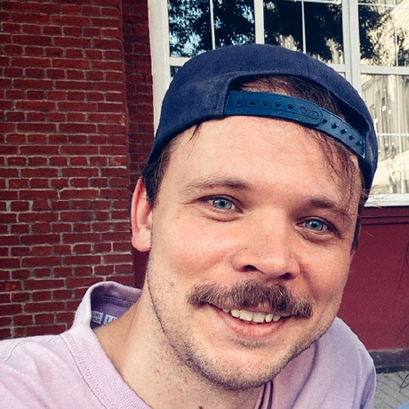
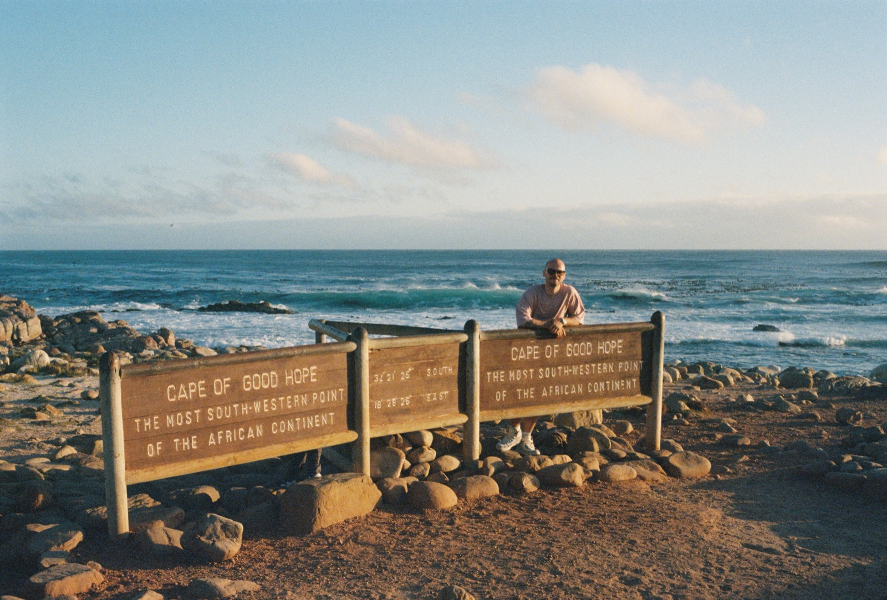
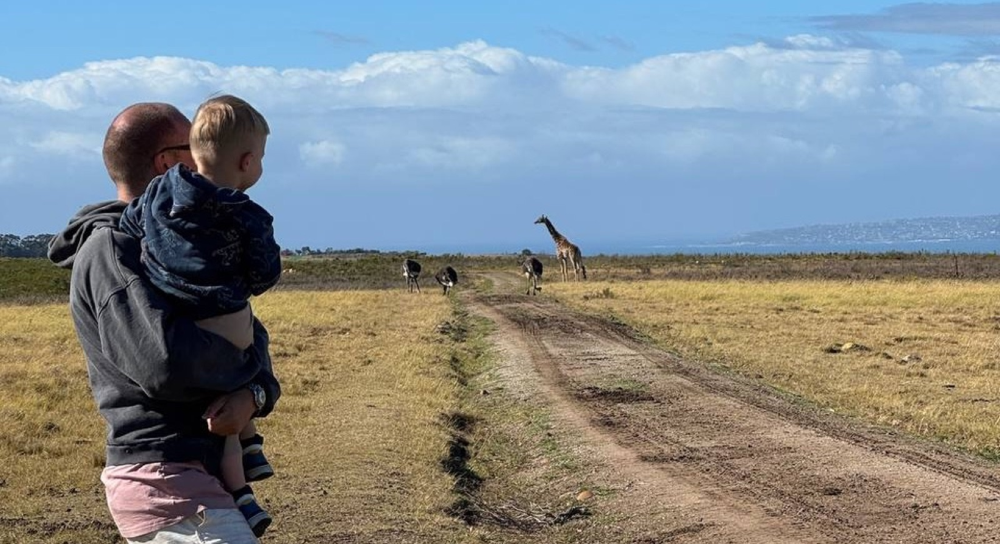
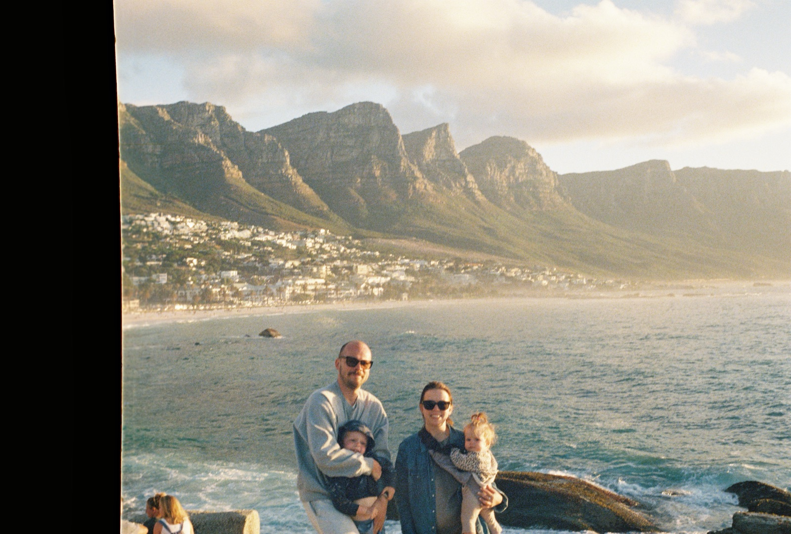

Меня зовут Андрей Волобуев. Я программист, менеджер, предприниматель, блогер и путешественник.
Я умею создавать команды для разработки ПО любой сложности и для решения любых задач в адекватный прогнозируемый срок и с реалистичным бюджетом, а так же умею потом этими командами управлять, чтобы заказчик получил ровно то, что хотел, за те деньги, которые рассчитывал заплатить и в тот срок, который ожидал.
с сентября 2025Сейчас я делаю это в команде Добычи данных в 2ГИС.
с октября 2022 по август 2025До этого, я делал тоже самое в кластере Стройка компании Самолет.
с февраля 2020 по сентябрь 2022А перед этим в команде Chemistry42 стартапа Insilico Medicine.
с августа 2018 по декабрь 2021Мне так же удалось работать программистом в маркетплейсе японской техники privezite.com.
Код, который я писал, можно посмотреть на моем гитхабе.
с октября 2016 по февраль 2022В 2012 году я открыл магазин фотоаппаратов во Владивостоке A&A PHOTO, а в 2016 открыл магазин крутой стильной посуды Soul Kitchen. В начале 2022 году оба этих бизнеса пришлось, к сожалению, закрыть.

Еще я довольно много путешествую и на данный момент успел посетить 68 стран и 178 городов. Все мои поездки (по годам, по городам, по странам, или стрелочками на карте) можно посмотреть на aerolist.ru/andrey. Это, кстати, тоже мой проект — заходите, регистрируйтесь, добавляйте свои поездки, будем соревноваться.

В доковидные времена я снимал видео из путешествий и выкладывал их на ютуб. Самые интересные, из тех, что точно стоит посмотреть: про Фарерские острова, про подъем на Язык Тролля в Норвегии, про Северную Корею и про то, как мы с женой ели хаукарль в Исландии.

Одно время у меня был был довольно популярный инстаграм, который я благополучно забросил, так как надоело, а я в жизни делаю только то, что мне нравится.
с октября 2016 по февраль 2022Сейчас я каждый день пишу интересные заметки обо всем, что меня интересует, в свой телеграм канал (заходите, читайте, подписывайтесь, пишите комменты).
Если вам кажется, что мы можем быть друг другу полезны и поработать вместе, то пишите сюда: andrey@andreyvolobuev.ru